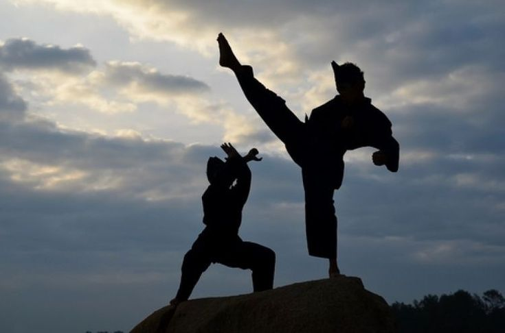

SEJARAH PENCAK SILAT JAWA BARAT
Di Jawa Barat, Pencak Silat muncul pada abad XVII dengan lahirnya
Pencak Cimande. Pencak Silat ini merupakan aliran tertua ibing pencak di Pasundan. Sebagai tokoh pendiri
aliran ini pada masa pemeintahan Aria Wiratanu Datat sebaga Bupati Cianjur ke-5 ini disebut cimande karena lahir di cimande.
Sekitar abad ke-18 di daerah Cikalong Kulon, Kabupaten Cianjur muncul pencak silat aliran baru yang dipelopori
oleh Haji Ibrahim. Sesuai dengan daerah tempat kelahiran aliran ini dinamakan aliran Cikalongan. Aliran pencak silat yang
berkembang di karawang adalah aliran cimande dan cikalong.
Pencak silat adalah bentuk kesenian yang di dalam penyajiannya
sarat dengan permainan atau ketangkasan bela diri. jenis kesenian ini sering disebut juga maenpo, usik atau ibing pencak.
tari pencak atau pencak kembang berbeda dengan pencak silat. isi pencak kembang dalam jurus yang di
gunakan semata-mata untuk kepentingan estetik. di sini yang di gunakan keindahan gerak semata.
sedangkan pencak silat isi jurusnya untuk kepentingan bela diri. oleh karena itu gerak dalam pencak silat
sebagai bela diri di gunakan untuk beladiri dan menyerang.
Lain halnya dengan gerakan ibing pencak yang
hanya khusus di petuntukkan bagi kepuasan atau kesenangan baik bagi pelakunya maupun peminatnya.
pencak silat biasanya di pertunjukan pada arena, baik yang berlantai maupun dalam panggung bulandongan.
Bentuk penyajiaanya bisa di lakukan secara tunggal, berpasangan(dua orang) dan secara kelompok atau massal.
sumber:kebudayaan.kemdikbud.go.id.com
ini adalah contohnya:

sumber:pinterest